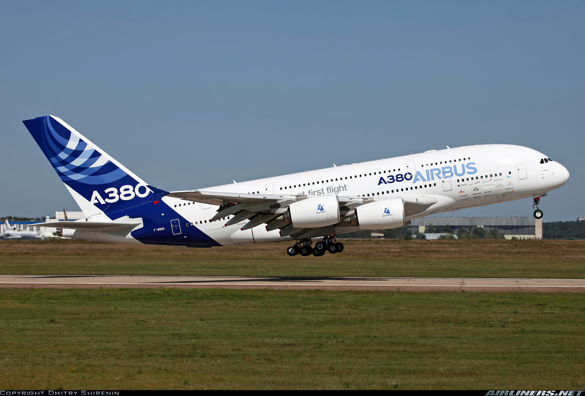

Overview
The Airbus A380-842 is the world's largest passenger airliner and the flagship of the Airbus A380 family. It features a full-length double-deck configuration and is known for its remarkable size, capacity, and comfort. It was designed for long-haul international flights and can carry up to 555 passengers in a three-class configuration. The A380 is often used by major airlines for high-density routes.
Specifications
| Feature | Details |
|---|---|
| Manufacturer | Airbus |
| First Flight | April 27, 2005 |
| Service Entry | October 15, 2007 |
| Length | 72.72 meters (238 ft 7 in) |
| Wingspan | 79.75 meters (261 ft 8 in) |
| Height | 24.10 meters (79 ft 5 in) |
| Max Takeoff Weight | 1,234,600 lbs (560,000 kg) |
| Maximum Speed | 1,020 km/h (633 mph, Mach 0.89) |
| Cruising Speed | 900 km/h (559 mph, Mach 0.85) |
| Range | 15,200 km (9,400 miles) |
| Service Ceiling | 43,000 feet (13,106 meters) |
| Fuel Efficiency | Up to 15% more fuel-efficient per seat than older wide-body aircraft |
| Engine Type | Rolls-Royce Trent 900 or Engine Alliance GP7200 |
Airlines Using the Airbus A380-842
| Airline |
|---|
| Emirates |
| Singapore Airlines |
| Qantas |
| British Airways |
| Lufthansa |
| Air France |
| China Southern Airlines |
| Malaysia Airlines |
| Thai Airways |
| ANA (All Nippon Airways) |
Crash History
The Airbus A380-842 has a strong safety record with very few accidents or incidents involving this model. Due to its size and advanced technology, it is considered one of the safest aircraft in the skies. However, as with all aircraft, it is subject to regular safety audits and maintenance. There have been no major crashes directly attributed to the A380-842, but other incidents involving similar models have led to safety improvements in the industry.